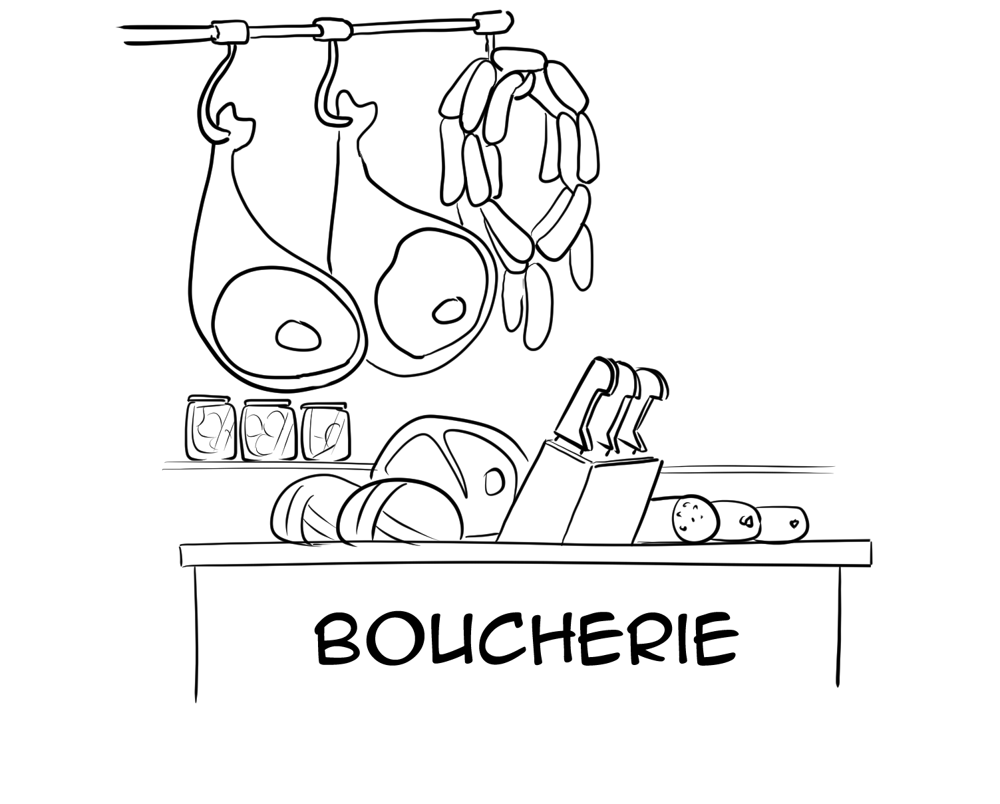

La viande fait aussi partie de l'élevage laitier 🥩
Produire du lait implique aussi la naissance d'animaux qui ne deviendront pas tous des producteurs de lait. Les veaux ou chevreaux mâles, ainsi qu'une partie des femelles, trouveront également leur place au sein de la ferme. L'élevage laitier implique aussi le renouvellement du troupeau, après plusieurs années de production, certaines vaches ou chèvres sont réformées.
Plutôt que de considérer ces animaux comme des sous-produits, nous souhaitons leur offrir de bonnes conditions de vie et valoriser autant que possible leur viande localement.
De la viande sans cochonneries ! 🤝
Le respect que nous porterons à nos animaux ne s'arrêtera pas à leurs conditions de vie. Nous souhaitons faire honneur à ce qu'ils nous apportent en transformant nous-mêmes leur viande.
Les additifs nocifs pour la santé n'auront pas leur place dans nos recettes : pas de conservateurs, pas de colorants, pas d'exhausteurs de goût. Bref, des produits simples, 100% naturels, authentiques et transparents, qui respectent la Vie.
Développement progressif 🥓
La boucherie constitue un métier à part entière au sein de notre ferme. Même si notre collectif compte déjà un boucher (Antoine), l'ouverture d'un comptoir proposant une large gamme de produits, de salaisons et de préparations bouchères nécessitera à terme l'engagement d'une personne dédiée à cet atelier.
Dans un premier temps, nous vendrons la viande sous forme de colis. Concrètement, dès qu'un animal sera programmé pour l'abattage, les commandes seront ouvertes. Ces colis, de 5 à 10kg, contiendront des morceaux peu transformés : steaks, saucisses, viande hachée, hamburgers, carbonnades, rôtis, côtes à l'os, côtelettes, lard, etc.
Cette formule nous permettra de démarrer l'activité de manière simple, tout en limitant les investissements matériels et les besoins de main d'œuvre. Par la suite, si la demande est au rendez-vous et que notre organisation le permet, nous envisagerons l'ouverture d'un comptoir avec vente au détail et une gamme de produits plus diversifiée, comprenant des salaisons, charcuteries et préparations diverses.